Ce catalogue présente les différents types de peaux noires, leurs caractéristiques, leurs besoins spécifiques ainsi que les problèmes cutanés les plus fréquents. Grâce à leur richesse en mélanine, les peaux noires possèdent des particularités uniques qui nécessitent des soins adaptés pour préserver leur éclat, leur hydratation et l’uniformité du teint.
La peau grasse produit une quantité importante de sébum, ce qui donne un aspect brillant au visage, particulièrement au niveau du front, du nez et du menton. Les pores peuvent être visibles et les boutons, points noirs ou imperfections apparaissent plus facilement. Chez les peaux noires, les imperfections laissent souvent des taches foncées appelées hyperpigmentation, qui peuvent rester longtemps après la disparition des boutons. Malgré cela, ce type de peau garde généralement une bonne élasticité et marque moins rapidement les signes de vieillissement. Elle a besoin de soins équilibrants, d’un nettoyage doux et d’une hydratation légère pour éviter l’excès de sébum sans agresser la peau.
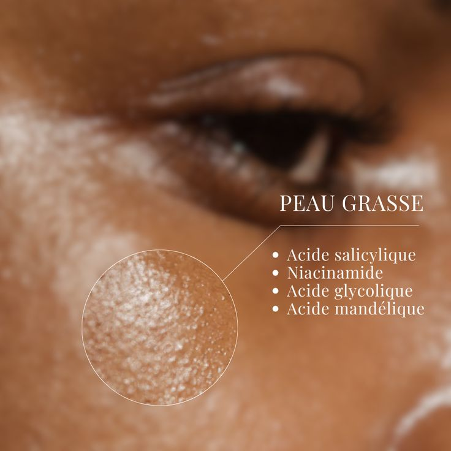
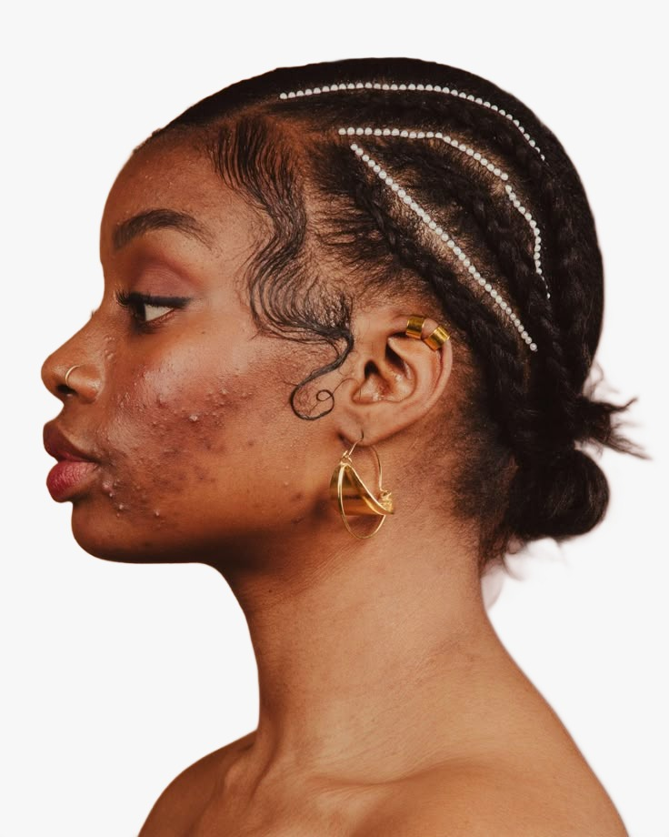
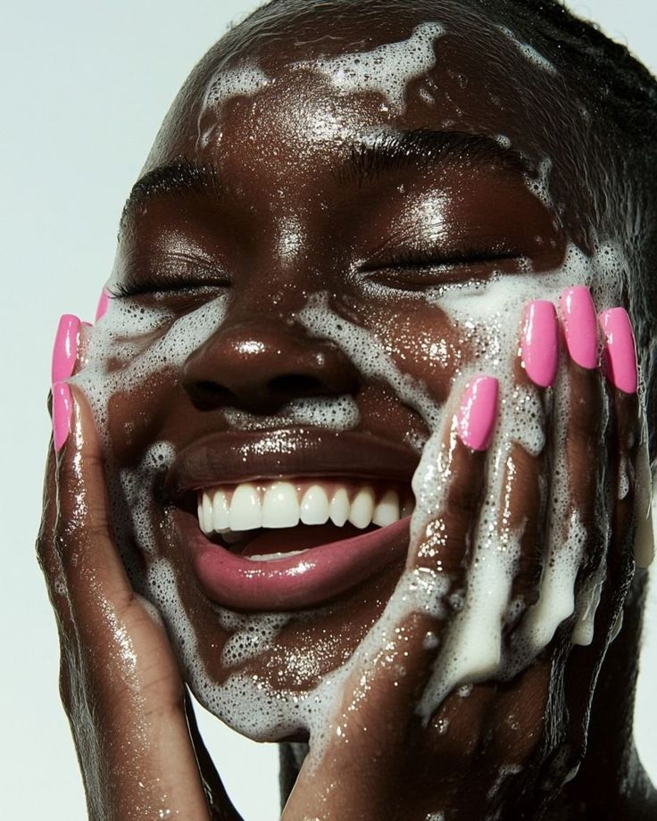
La peau sèche manque de lipides et d’hydratation, ce qui peut provoquer des tiraillements, des zones rugueuses ou un aspect terne et “cendré”. Ce type de peau peut perdre rapidement son éclat naturel lorsqu’elle n’est pas suffisamment nourrie. Elle est aussi plus exposée aux irritations et aux marques liées à la sécheresse. Les peaux noires sèches ont besoin de soins riches, nourrissants et hydratants afin de maintenir une peau souple, lumineuse et confortable au quotidien.
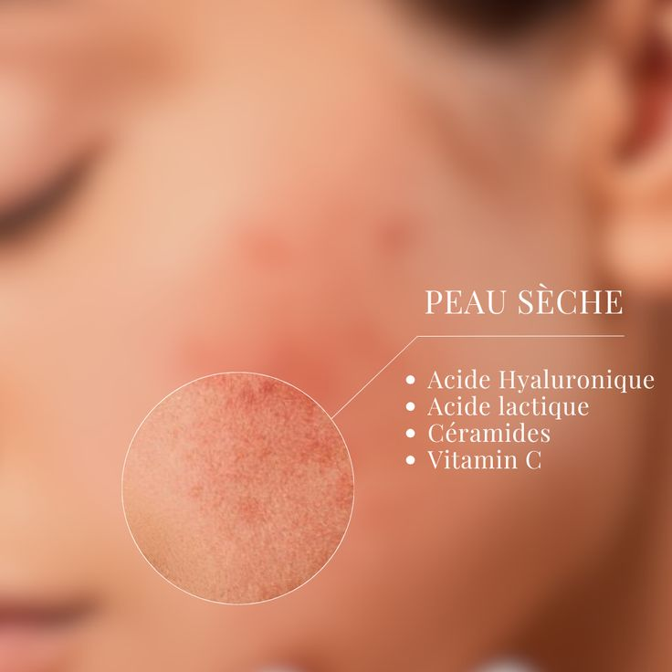
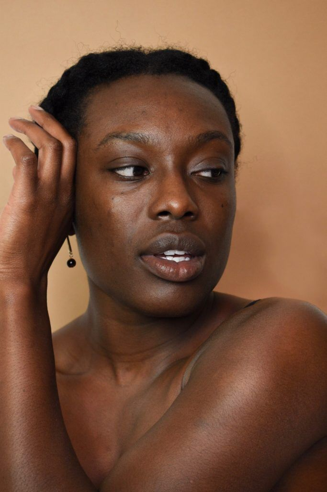
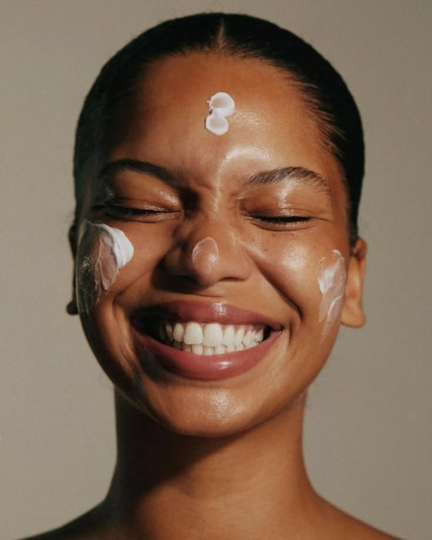
La peau mixte combine une zone T grasse (front, nez, menton) avec des joues normales ou sèches. Elle peut présenter de la brillance sur certaines parties du visage tout en gardant des zones sensibles ou déshydratées ailleurs. Ce type de peau nécessite un équilibre précis afin de contrôler le sébum sans assécher les autres zones. Des soins légers, hydratants et adaptés aux différentes parties du visage permettent de préserver l’uniformité et l’éclat du teint.
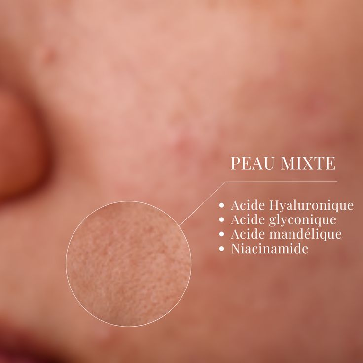
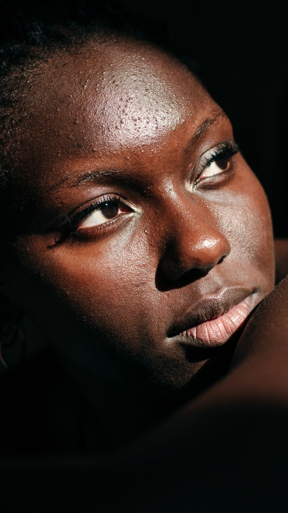
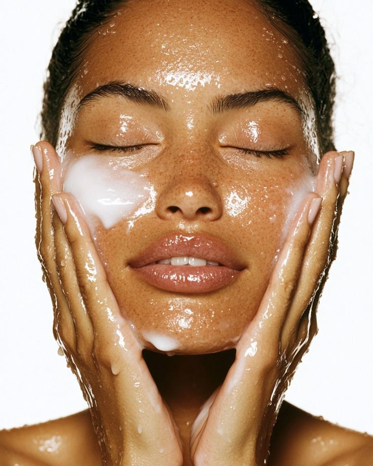
La peau sensible réagit facilement aux produits agressifs, au soleil, aux changements climatiques ou au stress. Elle peut présenter des rougeurs, des démangeaisons, des irritations ou des sensations de brûlure. Chez les peaux noires, les irritations peuvent rapidement entraîner des taches foncées ou un teint irrégulier. Ce type de peau nécessite des produits très doux, sans alcool agressif ni parfum fort, afin de protéger la barrière cutanée et éviter les réactions.
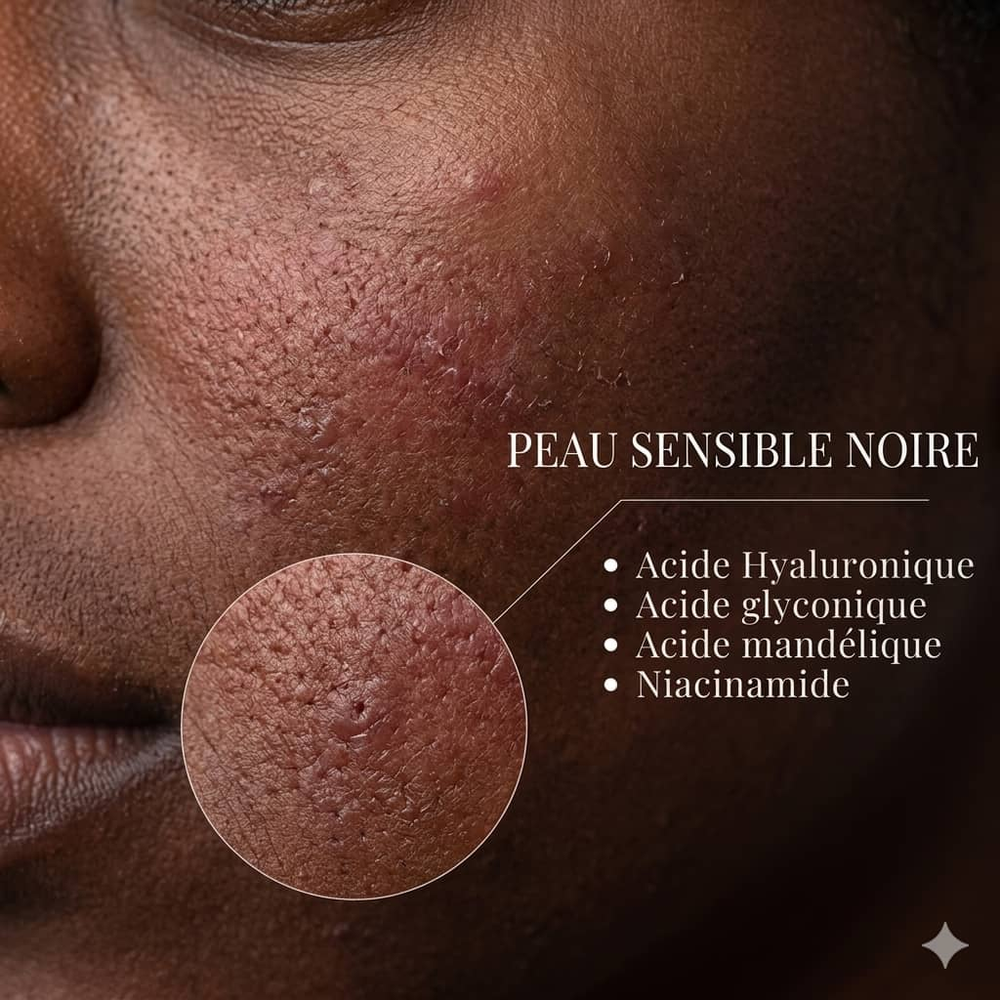
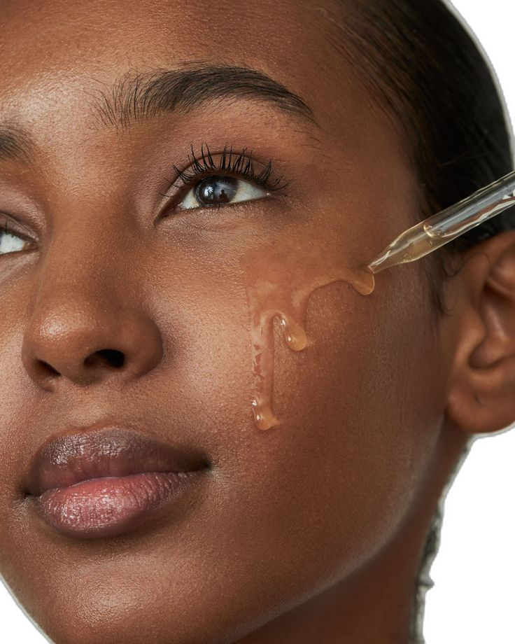
Les peaux noires possèdent une forte concentration en mélanine qui leur apporte une beauté et une protection naturelle particulières. Cependant, elles sont également plus sujettes aux taches pigmentaires, à la déshydratation et aux marques laissées par les imperfections. Comprendre son type de peau permet d’utiliser des soins adaptés et de préserver un teint uniforme, sain et éclatant.